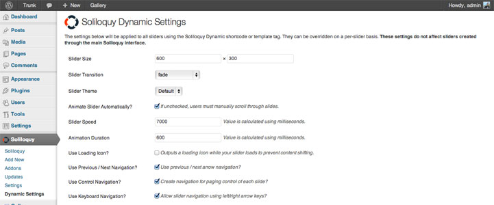

The Dynamic Addon for Soliloquy is a premium Addon that allows you to create Soliloquy-based sliders on the fly via shortcode or template tag. It gives you the freedom to generate sliders incredibly fast without the need of the back-end interface of Soliloquy. It utilizes the same processing engine and HTML output to deliver your sliders, so you get the same incredible speed, performance and customization with the added bonus of doing it on the fly – hence dynamic.
Requirements
The Dynamic Addon is a premium Addon purchased outside of the regular Soliloquy license. Both single and developer license holders can use this Addon, but it does require a separate purchase. It also requires WordPress 3.5 or greater and Soliloquy 1.4.9.1 or greater to use.
How It Can Be Used
The Dynamic Addon can be used to create sliders from images in a number of different scenarios. Here are the four scenarios that are currently supported.
- Images attached to the current post, page or custom post type.
- A custom string of image IDs from the Media Library (comma-separated).
- Overriding the default WordPress gallery output with a slider.
- Slider from your NextGen galleries.
Each different scenario has some different configurations, and I will explain how to format your shortcodes and template tags to take advantage of each one later in the documentation.
Formatting Global Options
Once the Addon has been installed and activated, there will be a new admin menu item called “Dynamic Settings” where you can go in and set some global slider defaults. The global defaults are only applied to sliders used in the dynamic scope, not to sliders created through the Soliloquy interface. The options provided to you are the exact same as with creating a slider in the interface, so it should be a familiar experience for you. You can view a screenshot below.

These settings will be used as default fallbacks if you decide not to override them in your shortcodes or template tags. I’ll explain how to override options on a per-slider basis in the next part of the documentation.
Formatting Shortcodes and Template Tags
The shortcode and template tag prefix used to output a dynamic Soliloquy slider is soliloquy_dynamic. The shortcode is output like this:
[soliloquy_dynamic]
..and the template tag is output like this:
soliloquy_dynamic()
Each one can take different configuration options to customize the output of the slider. Let’s explain those below.
Configuration Parameters
The configuration parameters available to each slider that is created dynamically is available below. Anything marked in red is required.
id
This is the only parameter that is required. Your ID can be one of three things depending on what type of dynamic slider you want to create.
If you want to create a dynamic slider from images attached to a particular post, the ID parameter should be the post ID for that particular post. This works for pages and custom post types as well. Your shortcode/template tag would look like this:
[soliloquy_dynamic id="176"] and soliloquy_dynamic( array( 'id' => 176 ) )
If you want to create a dynamic slider from a custom set of images, your ID parameter should start with ‘custom-‘ and then be appended with whatever unique ID you want to call your slider. This type of slider also requires the images parameter (to specify what image IDs to use from your Media Library). Your shortcode/template tag would look like this:
[soliloquy_dynamic id="custom-random-images" images="345,348,564,464"] and soliloquy_dynamic( array( 'id' => 'custom-random-images', 'images' => '345,348,564,464' ) )
If you want to create a dynamic slider from your NextGen galleries, the ID parameter should start with ‘nextgen-‘ and then be appended with the unique ID number for your gallery. Your shortcode/template tag would look like this:
[soliloquy_dynamic id="nextgen-2"] and soliloquy_dynamic( array( 'id' => 'nextgen-2' ) )
images
The images parameter is only used in conjunction with creating a slider from a custom set of images; it is ignored for any other dynamic slider. The images parameter should contain a string of image IDs from your Media Library, separated by commas. They will be displayed in the order you have specified (unless you have selected to randomize the slide order). This is an example of how the images parameter is used:
[soliloquy_dynamic id="custom-random-images" images="345,348,564,464"] and soliloquy_dynamic( array( 'id' => 'custom-random-images', 'images' => '345,348,564,464' ) )
link
The link parameter tells Soliloquy if and how it should link your images. By default, images are not linked to anything. You can choose between two different options for image linking: attachment and file.
Using the attachment option will link your images to their respective attachment pages. This option is ignored when used in conjuction with a NextGen gallery.
Using the file option will link your images to their respective image URLs.
This is an example of how the link parameter is used:
[soliloquy_dynamic id="174" link="attachment"] and soliloquy_dynamic( array( 'id' => '174', 'link' => 'attachment' ) )
size
The size parameter determines what size image to pull when gathering images from your Media Library or as attachments (this is ignored when in conjuction with a NextGen gallery). It defaults to ‘full’ but can take any registered image size slug via add_image_size as a parameter.
This is an example of how the size parameter is used:
[soliloquy_dynamic id="273" size="medium"] and soliloquy_dynamic( array( 'id' => '273', 'size' => 'medium' ) )
theme
This parameter is only used if you have the Themes Addon for Soliloquy active. You can specify a custom theme slug from the Themes Addon to style your slider to that particular theme. It defaults to the standard Soliloquy theme.
This is an example of how the theme parameter is used:
[soliloquy_dynamic id="454" link="file" theme="metro"] and soliloquy_dynamic( array( 'id' => '454', 'link' => 'file', 'theme' => 'metro' ) )
exclude
The exclude parameter gives you the ability to specify a particular image or set of images to not display in the slider. This parameter is only used when creating a dynamic slider from images attached to a post, page or custom post type. You can enter either one or a string of image IDs separated by a comma.
This is an example of how the exclude parameter is used:
[soliloquy_dynamic id="253" exclude="321,1034"] and soliloquy_dynamic( array( 'id' => '253', 'exclude' => '321,1034' ) )
crop
The crop parameter gives you the ability to crop images to the size you have defined. This parameter is only utilized when you have the Crop Addon installed and activated on the site. It will dynamically crop and generate a new image on the fly based on the size you have entered. This works for all types of dynamic sliders, including NextGen gallery sliders. It is a boolean value and can be either true or false.
This is an example of how the crop parameter is used:
[soliloquy_dynamic id="253" crop="true"] and soliloquy_dynamic( array( 'id' => '253', 'crop' => 'true' ) )
width
The width of the slider in pixels. Like Soliloquy, this populates the max-width CSS property in order to keep the slider responsive. It can also be defined in percentages, like this:
[soliloquy_dynamic id="253" width="100%"] and soliloquy_dynamic( array( 'id' => '253', 'width' => '100%' ) )
height
The height of the slider in pixels. Like Soliloquy, this populates the max-width CSS property in order to keep the slider responsive. It can also be defined in percentages, like this:
[soliloquy_dynamic id="253" height="50%"] and soliloquy_dynamic( array( 'id' => '253', 'height' => '50%' ) )
transition
You can choose between the three different transitions available: fade, slide-horizontal and slide-vertical.
[soliloquy_dynamic id="253" transition="slide-horizontal"] and soliloquy_dynamic( array( 'id' => '253', 'transition' => 'slide-horizontal' ) )
animate
Whether or not to have the slider begin automatically or manually. It can be either true or false. Setting to false will force the user to manually scroll through the slides.
[soliloquy_dynamic id="253" animate="false"] and soliloquy_dynamic( array( 'id' => '253', 'animate' => 'false' ) )
speed
The duration of an image in the slider in milliseconds.
[soliloquy_dynamic id="253" speed="4000"] and soliloquy_dynamic( array( 'id' => '253', 'speed' => '4000' ) )
duration
The amount of time it should take to animate from one image to the next in milliseconds.
[soliloquy_dynamic id="253" duration="300"] and soliloquy_dynamic( array( 'id' => '253', 'duration' => '300' ) )
preloader
Whether or not to show a preloader icon while the slider is initializing. This helps prevents content jumping. It can be either true or false.
[soliloquy_dynamic id="253" preloader="true"] and soliloquy_dynamic( array( 'id' => '253', 'preloader' => 'true' ) )
navigation
This option controls whether or not to output the slider arrows. It can be either true or false.
[soliloquy_dynamic id="253" navigation="true"] and soliloquy_dynamic( array( 'id' => '253', 'navigation' => 'true' ) )
control
This option controls whether or not to output the slider navigation dots. It can be either true or false.
[soliloquy_dynamic id="253" control="true"] and soliloquy_dynamic( array( 'id' => '253', 'control' => 'true' ) )
keyboard
This option is used to determine if you can use keyboard controls (left, right, up, down) to navigate through the slider. It can be either true or false.
[soliloquy_dynamic id="253" keyboard="false"] and soliloquy_dynamic( array( 'id' => '253', 'keyboard' => 'false' ) )
multi_key
Enabling this option will sync all sliders on a page to the same keystroke, meaning that they will all advance at the same time. It can be either true or false.
[soliloquy_dynamic id="253" multi_key="false"] and soliloquy_dynamic( array( 'id' => '253', 'multi_key' => 'false' ) )
mousewheel
Whether or not to use mousewheel navigation to advance the slider. It can be either true or false.
[soliloquy_dynamic id="253" mousewheel="false"] and soliloquy_dynamic( array( 'id' => '253', 'mousewheel' => 'false' ) )
pauseplay
Turning this option on enables a pause/play element in the slider to let the user know when a slider is active or paused. Clicking on these elements can also resume or pause the slider. It can be either true or false.
[soliloquy_dynamic id="253" pauseplay="true"] and soliloquy_dynamic( array( 'id' => '253', 'pauseplay' => 'true' ) )
random
If checked, the slides will be randomized. This can be either true or false.
[soliloquy_dynamic id="253" random="true"] and soliloquy_dynamic( array( 'id' => '253', 'random' => 'true' ) )
number
Determines which slide number to start on. The index is set to 0, so 0 is the first slide, 1 is the second slider, and so on and so forth.
[soliloquy_dynamic id="253" number="2"] and soliloquy_dynamic( array( 'id' => '253', 'number' => '2' ) )
loop
Whether or not to loop the animation from beginning to end and vice versa. If set to false, the slider will stop and the arrows will disabled when you have reached the end or beginning of the slider. It can be either true or false.
[soliloquy_dynamic id="253" loop="false"] and soliloquy_dynamic( array( 'id' => '253', 'loop' => 'false' ) )
action
When checked, this will cause the slider to pause any time a user interacts with your slider (clicks an arrow, swipes, etc.). If you don’t want this to occur (e.g. the slider should always move no matter what), set to false. It can be either true or false.
[soliloquy_dynamic id="253" action="true"] and soliloquy_dynamic( array( 'id' => '253', 'action' => 'true' ) )
hover
Pauses the slider when a user hovers over it. It can be either true or false.
[soliloquy_dynamic id="253" hover="false"] and soliloquy_dynamic( array( 'id' => '253', 'hover' => 'false' ) )
css
Use CSS transitions (if available) over JS transitions. While CSS transitions can give some performance benefits, they can still be buggy and cause undesirable results (like text antialiasing during transitions). If you are noticing funny results, set this option to false. It can be either true or false.
[soliloquy_dynamic id="253" css="false"] and soliloquy_dynamic( array( 'id' => '253', css' => 'false' ) )
reverse
When set to true, this reverses the animation of any of the slide animations. This means that horizontal sliding will go from left to right and vertical sliding will go from bottom to top. It can be either true or false.
[soliloquy_dynamic id="253" reverse="false"] and soliloquy_dynamic( array( 'id' => '253', 'reverse' => 'false' ) )
smooth
The smooth height option lets the slider adjust heights smoothly if there are images of different heights in the slider. It can be either true or false.
[soliloquy_dynamic id="253" smooth="true"] and soliloquy_dynamic( array( 'id' => '253', 'smooth' => 'true' ) )
touch
This option enables touch swiping for visitors that are utilizing touch devices. It can be either true or false.
[soliloquy_dynamic id="253" touch="true"] and soliloquy_dynamic( array( 'id' => '253', 'touch' => 'true' ) )
delay
The time that the slider should delay in starting in milliseconds.
[soliloquy_dynamic id="253" delay="3000"] and soliloquy_dynamic( array( 'id' => '253', 'delay' => '3000' ) )
Adding Thumbnail Support
Assuming you have the Thumbnails Addon activated, you can add thumbnail support to your dynamic sliders. Here are the parameters you can use for the thumbnail support.
thumbnails
This option enables or disables thumbnails for the slider.
[soliloquy_dynamic id="253" thumbnails="true"] and soliloquy_dynamic( array( 'id' => '253', 'thumbnails' => 'true' ) )
thumbnails_crop
If you have the Crop Addon active, you can choose to crop your thumbnails to the dimensions you specify.
[soliloquy_dynamic id="253" thumbnails_crop="true"] and soliloquy_dynamic( array( 'id' => '253', 'thumbnails_crop' => 'true' ) )
thumbnails_width
Sets the width of each thumbnail for the slider (defaults to 150).
[soliloquy_dynamic id="253" thumbnails_width="125"] and soliloquy_dynamic( array( 'id' => '253', 'thumbnails_width' => '125' ) )
thumbnails_height
Sets the height of each thumbnail for the slider (only used in if the thumbnails_crop setting is set to true).
[soliloquy_dynamic id="253" thumbnails_height="75"] and soliloquy_dynamic( array( 'id' => '253', 'thumbnails_height' => '75' ) )
thumbnails_margin
The margin between each thumbnail (defaults to 5).
[soliloquy_dynamic id="253" thumbnails_margin="8"] and soliloquy_dynamic( array( 'id' => '253', 'thumbnails_margin' => '8' ) )
thumbnails_min
The minimum number of thumbnails that should be displayed (defaults to 3).
[soliloquy_dynamic id="253" thumbnails_min="2"] and soliloquy_dynamic( array( 'id' => '253', 'thumbnails_min' => '2' ) )
thumbnails_max
The maxmimum number of thumbnails that should be displayed (defaults to 3).
[soliloquy_dynamic id="253" thumbnails_max="2"] and soliloquy_dynamic( array( 'id' => '253', 'thumbnails_max' => '2' ) )
thumbnails_position
The position of the thumbnails relative to the slider. Possible values are “top” and “bottom” (defaults to “bottom”).
[soliloquy_dynamic id="253" thumbnails_position="top"] and soliloquy_dynamic( array( 'id' => '253', 'thumbnails_position' => 'top' ) )
thumbnails_distance
The padding between the thumbnails container and the slider (defaults to 20).
[soliloquy_dynamic id="253" thumbnails_distance="15"] and soliloquy_dynamic( array( 'id' => '253', 'thumbnails_distance' => '15' ) )
Modifying the Default WordPress Gallery to a Slider
The Dynamic Addon also lets you override the [gallery] shortcode output and turn it into a slider with some custom attributes. You can even pass in custom parameters from above to style the slider too! All you need to do is add the attribute soliloquy="true" to the gallery shortcode to turn it into a slider, like this:
[gallery ids="345,346,347" soliloquy="true"]
Adding that parameter will turn the gallery into a Soliloquy slider with those image IDs as the images for the slider. You can also pass in custom arguments into another parameter, soliloquy_args. The arguments should be passed in the form of a query string, like this:
[gallery ids="345,346,347" soliloquy="true" soliloquy_args="width=400&height=200&random=true"]
Remember, these parameters will override your defaults that you specify on the Dynamic Settings page.
Other Notes
Concerning NextGen galleries, the Dynamic Addon will obey any commands to exclude images that you have checked. However, the Dynamic Addon will not bring over any lightbox effects from clicking on images from within your NextGen gallery. The description of the image will be used as the caption in the slider.
As with Soliloquy, you can have as many dynamic sliders on a page at a time as you wish. Soliloquy will still load super fast and efficient like normal. 
The HTML and CSS structure are exactly the same as Soliloquy, except the Dynamic Addon adds a custom class of “soliloquy-dynamic” to any sliders made dynamically.
You should also take care to check that the soliloquy_dynamic function exists before outputting it in your template files, just like the code does with the regular soliloquy function. It would be output like so:
if ( function_exists( 'soliloquy_dynamic' ) ) soliloquy_dynamic( array( 'id' => '176' ) );
Be sure to wrap it in beginning and ending PHP tags if necessary.